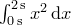
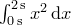

PyXPlot has two modes in which it can produce graphical output. In singleplot mode, the default, each time the plot command is issued, the canvas is wiped clean and the new plot is placed alone on a blank page. In multiplot mode, vector graphics objects accumulate on the canvas. Each time the plot command is issued, the new graph is placed on top of any other objects which were already on the canvas, and many plots can be placed side-by-side.
The user can switch between these two modes of operation by issuing the commands set multiplot and set nomultiplot. The set origin command is required for multiplot mode to be useful when placing plots side-by-side: it sets the position on the page of the lower-left corner of the next plot. It takes a comma-separated  coordinate pair, which may have units of length, or, if dimensionless, are assumed to be measured in centimetres. The following example plots a graph of
coordinate pair, which may have units of length, or, if dimensionless, are assumed to be measured in centimetres. The following example plots a graph of  to the left of a plot of :
to the left of a plot of :
set multiplot set width 8 plot sin(x) set origin 10,0 plot cos(x)
All objects on a multiplot canvas have a unique identification number. By default, these count up from one, such that the first item placed on the canvas is number one, the next is number two, and so forth. Alternatively, the user may specify a particular number for a particular object by supplying the modifier item to the plot command, followed by an integer identification number, as in the following example:
plot item 6 'data.dat'
If there were already an object on the canvas with identification number 6, this object would be deleted and replaced with the new object.
A list of all of the objects on the current multiplot canvas can be obtained using the list command, which produces output in the following format:
# ID Command
1 plot item 1 'data1.dat'
2 plot item 2 'data2.dat'
3 [deleted] plot item 3 'data3.dat'
A multiplot canvas can be wiped clean by issuing the clear command, which removes all items currently on the canvas. Alternatively, individual items may be removed using the delete command, which should be followed by a comma-separated list of the identification numbers of the objects to be deleted. Deleted items may be restored using the undelete command, which likewise takes a comma-separated list of the identification numbers of the objects to be restored, e.g.:
delete 1,2 undelete 2
Once a canvas has been cleared using the clear command, however, there is no way to restore it. Objects may be moved around on the canvas using the move command. For example, the following would move item 23 to position  measured in inches:
measured in inches:
move 23 to 8*unit(in), 8*unit(in)